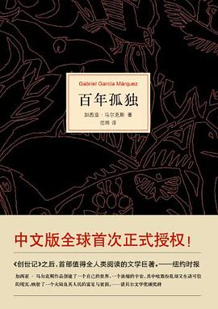

-
《语言学教程(第4版)》胡壮麟主编的《语言学教程》（第四版）在第三版基础上听取广大师生意见修订而成。包括语言学理论介绍，语音，词汇，句法，语义，语言和认知，语言和社会文化，语用学，语言和文学，语言和计算机，语言学和外语教学，语言学流派等十二章。本教程作者均为国内语言学名家，畅销二十二年，堪称语言学教材经典之作。
语言学教程:[英文版]
-
东野圭吾继《白夜行》《嫌疑人X的献身》之后最重磅作品！
日本两大推理榜年度冠军
东野圭吾“加贺恭一郎系列”迄今最高杰作
2010年“这本推理小说了不起！BEST10”年度第1名
2009年“《周刊文春》推理小说BEST10”年度第1名
日本《读卖新闻》“年度最佳图书”
日本亚马逊网站四星半高分评价
同名日剧由阿部宽主演，收视率超20%，高居榜首
新参者
-
《挪威的森林》是日本作家村上春树所著的一部长篇爱情小说，影响了几代读者的青春名作。故事讲述主角渡边纠缠在情绪不稳定且患有精神疾病的直子和开朗活泼的小林绿子之间，苦闷彷徨，最终展开了自我救赎和成长的旅程。彻头彻尾的现实笔法，描绘了逝去的青春风景，小说中弥散着特有的感伤和孤独气氛。自1987年在日本问世后，该小说在年轻人中引起共鸣，风靡不息。上海译文出版社于2018年2月，推出该书的全新纪念版。
挪威的森林
-
每本书的封面之下都有一套自己的骨架，作为一个分析阅读的读者，责任就是要找出这个骨架。一本书出现在面前时，肌肉包着骨头，衣服包裹着肌肉，可说是盛装而来。读者用不着揭开它的外衣或是撕去它的肌肉来得到在柔软表皮下的那套骨架，但是一定要用一双X光般的透视眼来看这本书，因为那是了解一本书、掌握其骨架的基础。
 如何阅读一本书
如何阅读一本书
-
《百年孤独》是魔幻现实主义文学的代表作，描写了布恩迪亚家族七代人的传奇故事，以及加勒比海沿岸小镇马孔多的百年兴衰，反映了拉丁美洲一个世纪以来风云变幻的历史。作品融入神话传说、民间故事、宗教典故等神秘因素，巧妙地糅合了现实与虚幻，展现出一个瑰丽的想象世界，成为20世纪最重要的经典文学巨著之一。1982年加西亚•马尔克斯获得诺贝尔文学奖，奠定世界级文学大师的地位，很大程度上乃是凭借《百年孤独》的巨大影响。

百年孤独
-
“心流”是指我们在做某些事情时，那种全神贯注、投入忘我的状态——这种状态下，你甚至感觉不到时间的存在，在这件事情完成之后我们会有一种充满能量并且非常满足的感受。其实很多时候我们在做自己非常喜欢、有挑战并且擅长的事情的时候，就很容易体验到心流，比如爬山、游泳、打球、玩游戏、阅读、演奏乐器还有工作的时候。
心流-最优体验心理学
-
这不只是一部科技产业发展历史集……
更是在这个智能时代，一部IT人非读不可，而非IT人也应该阅读的作品。
一个企业的发展与崛起，绝非只是空有领导强人即可达成。任何的决策、同期的商业环境、各种能量的此消彼长，也在影响着企业的兴衰。《浪潮之巅》不只是一部历史书 ，除了讲 述 科技顶尖企业的发展规律， 对于华尔街如何左右科技公司，以及金融风暴对科技产业的冲击，也多有着墨。
浪潮之巅（第四版）
-
《孤星之旅：苏东坡传》是一本以近似记者视角探究苏轼和宋朝文化生态的传记，用新的史学观念、美学视野追溯苏轼的一生，波及他与那个时代的政治、文化、艺术生态的关系，以及他生活的时代的文化景观。作者周文翰试图呈现“动态的全画幅”，而不仅仅勾勒一个漫画式的主角。在这本书里，苏轼的“基底”是士人、官员，其次才依先后成为文章家、诗人、词人、书法家、学问家。他的一生遭遇官场的起伏、贬谪的磨难、亲人的离别、人事的纠葛，有许多美好、恐惧、无奈和梦想，他持续用写作、绘画、游赏乃至笑话等“艺术方式”对抗接连而来的恶意和艰困，让自己的生命得以丰富和超越。本书描述了苏轼生命里一幕幕或光辉或黯淡、或显或隐的场景，进而探究苏轼何以成为“明星”，又为何成了北宋文化史上的“孤星”。
孤星之旅
-
本书是一部文学评论集，聚焦二十余位世界级知名作家，其中既有简·奥斯丁、大仲马、福楼拜、狄更斯这样的经典作家，也有加缪、菲茨杰拉德、纳博科夫、菲利普·罗斯、多丽丝·莱辛、艾丽丝·门罗、石黑一雄、托卡尔丘克、麦克尤恩这样的现当代文学大家。
黄昱宁正是这些小说家所期待的理想读 者，她秉持传统的细读方法，却不落窠臼，以细致入微的观察和别具一格的审美发掘小说细节的灵光闪耀之处，向读者揭示小说艺术的魅力。她的这些文字，自始至终，都从细节中来，往细节中去。
小说的细节
-
《天上深渊：鲁迅十二论》是关于鲁迅的综论，是浙江大学教授、“中国好书”得主江弱水的潜心力作。
全书分十二章，从《呐喊》到《彷徨》，从《朝花夕拾》到《故事新编》，从现代散文诗《野草》到鲁迅的旧体诗，从鲁迅的生命困局到话语困境，直到语文观，对鲁迅的写作做了一个纵向而又立体的观照。
本书破除了对鲁迅作品的许多陈见，提供了解读鲁迅的新的路径，同时，也有在前人研究的基础上所做的更为精细完整的分析，如鲁迅与胡适的语文观的对比，鲁迅旧诗的艺术魅力的讨论等等。在鲁迅研究已经汗牛充栋的今天，本书多有创见与发明，提供了许多对于鲁迅的令人耳目一新的解读。
天上深渊